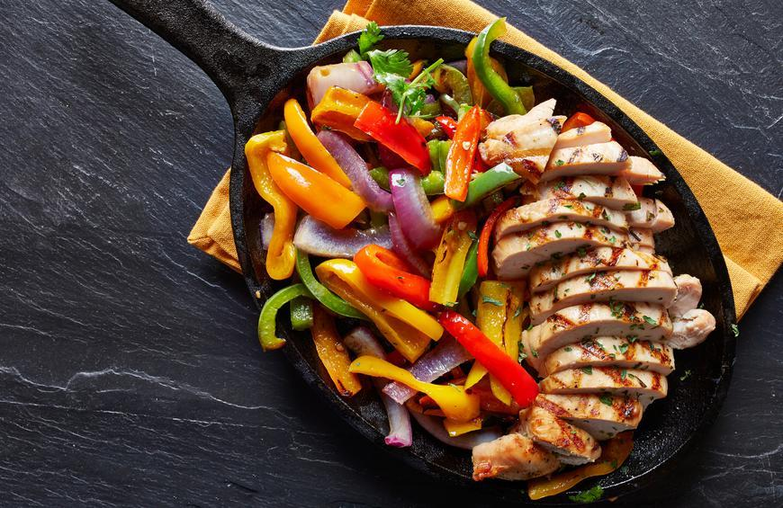

Chicken Fajitas

Making fajitas is one of the simplest and easiest recipes to make when in rush. A recipe that never
fails to satisfy the pallet. A classic, juicy seasoned chicken, tossed with sauteed bell peppers
and onions. To add even more flavor wrap in a warm torilla topped with avacado, cream cheese, or salsa.
The possibilities are endless.
Ingredients
- Chicken Breast
- Bell Peppers
- Onions
- Seasoning of Choice
Steps
- Cut the chicken breast. Slice chicken into 1 inch cubes. (Make sure to cut as even as possible to ensure the chicken cooks evenly)
- Season the chicken. Generously add seasoning of choice on all side of the chicken cubes
- Cut onion and bell pepper Make sure they are cut into strips of similiar size to ensure even cooking
- Start cooking chicken. Into a skillet with oil of choice add seasoned chicken and leave until its fully cooked with a slight sear
- Sautee onions and bell peppers. Remove the chicken and add the onions and bell pepers to the same pan. Cook to preference.
- Combine everything. After the onions and bell peppers have been cooked to preference add chicken back into pan and enjoy the chicken fajitas.